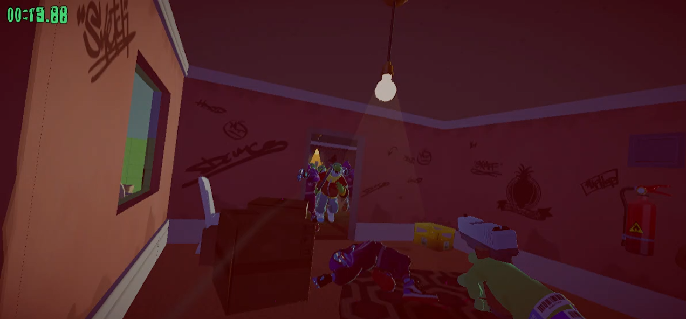
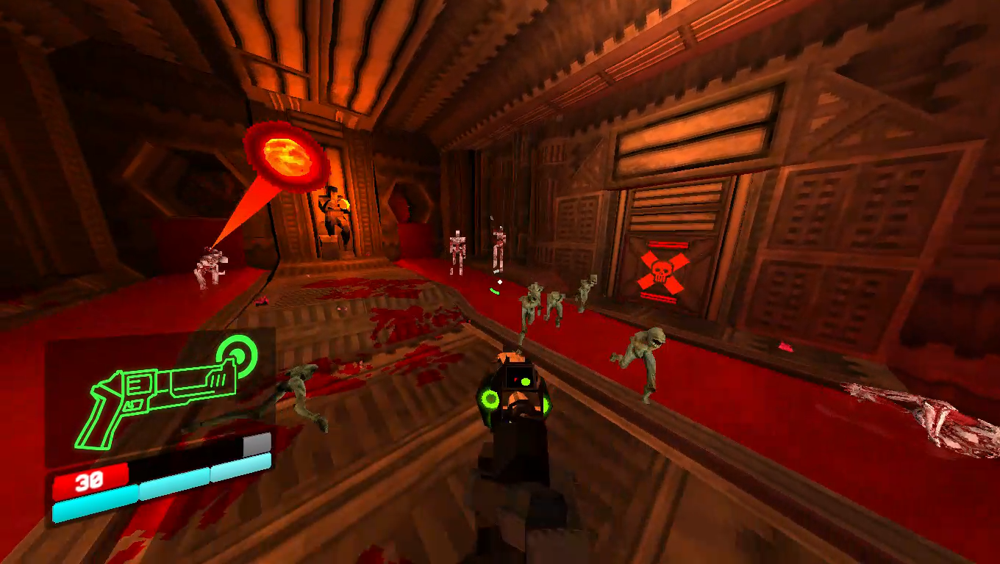

Itch.io finds: Part 1.
"VirtualBox. Send it and hope."
Page last updated at 11:27AM CST on 5/17/23
Hello everyone.
Over the past couple days I've been playing a bunch of games I downloaded off itch.io a bit ago and rating them. This is a review of some of the free games I was able to pick up. I've got a 64gb flash drive full of these, so I'm probably gonna do more reviews like this in the future.
Anger Foot
Link: Right here
Anger foot is fucking insane bro. Positively wacky.
The entire game, front-to-back
Rating: ★★★★★
ULTRAKILL prelude
Link: Over there
My body is a MACHINE.
WHERE
IS
SARAH
CONNOR.
If you don't know what ULTRAKILL is, you must be living under a rock. While I suck at playing it, it's still really fun, and has a lot of cool mechanics. If the only experience you've had with it is watching someone else play it, you might think it'd be impossible to read what's happening on the screen, but ULTRAKILL somehow pulls it off.
While there's only 2 weapons in the demo, there's still enough features to both of them to keep the gameplay entertaining. If I had the money, I'd buy the full thing.
Rating: ★★★★★
Karlson prototype
Link: This page over here

Karlson is alright. What it'd potentially have in the final product would be great, but its prototype is just a bit meh.
The objective in Karlson is to get the milk. Most of the time during gameplay on some levels you will be able to take out every enemy in less than a minute, but you'll have to take 5-6 minutes to parkour up to the milk. This is mainly because Karlson's controls get in the way of the game itself. My main issue is with wallrunning. I can wallrun just fine, but most of the time when the character is wallrunning, I don't want to be wallrunning. It's sort of its own deal.
However, it's still a good play on some levels. Particularly the escape sections. Those are the main highlights of the game, with a lot of speedrunning potential.
Beat 00:26:52 on escape-one. It's good.
Rating: ★★★☆☆
The Science of Staying Awake
Link: Yeah this page

lmao bro I didn't know what this was until I booted it up under Wine.
So it turns out this game was submitted to the 2023 Yandere game jam. And after searching up the meaning of that word, it certainly explains a lot. It's about a college student who goes back to their dorm to find a dog-dude in their bed. A really clingy, potentially psychotic dog-dude, depending on your choices. It certainly fits the contest it was entered.
For my feelings on this entry, here's what I wrote down in the emails I've been using keeping track of these games.
lmao/10
Superhotline Miami
Link: Bingo bango

Rating: ★★★★★
Alright, that's pretty much it for now. I've played more but I'm bored of writing. I'm gonna go put a hammer through a 2009 HP pavilion slimline. Have a good one, and remember, it's not binge drinking unless you stop.